Illustrations
A proof is a decomposition, and a decomposition is a tree: the expression splits into a non-negative term and a remainder, which splits again. These utilities turn that structure, and the constraints of a problem, into pictures.
Drawing needs CairoMakie and GraphMakie; the package itself stays free of dependencies and only gains the plotting methods once they are loaded:
using Xitip
using CairoMakie, GraphMakie, Graphs, NetworkLayoutThe structures themselves (proof_tree, chain_rule_tree, constraint_graph) are plain data and need nothing extra.
The tree behind a proof
plot_proof_tree draws the derivation. The expression sits at the root, each non-negative term branches off to the left, and what is still to account for carries on down to the right, until nothing is left:
plot_proof_tree(explain("2 H(X,Y,Z) <= H(X,Y) + H(Y,Z) + H(X,Z)"))
Reading it: Han's inequality for three variables is I(X;Y|Z) plus I(X,Y;Z), and that second piece is in turn I(X;Z|Y) plus I(Y;Z).
Terms coming from your own constraints are drawn in their own colour and labelled C1, C2, ..., with their entropy form and the reason they are non-negative. C1 below is minus a conditional mutual information, which the Markov chain forces to zero:
plot_proof_tree(explain("I(W;Z) <= I(X;Y)", "W/X/Y/Z"))
Without a plotting package loaded, or for a statement with no proof, the same call raises a XitipError saying so. The text form is always available:
proof_tree(explain("I(W;Z) <= I(X;Y)", "W/X/Y/Z"))-H(W) - H(Z) + H(X) + H(Y) + H(W,Z) - H(X,Y)
├─ C1 = H(X) - H(W,X) - H(X,Y) + H(W,X,Y)
│ = -I(W;Y|X) = 0
└─ -H(W) - H(Z) + H(Y) + H(W,Z) + H(W,X) - H(W,X,Y)
├─ C2 = H(Y) - H(Z,Y) - H(W,X,Y) + H(W,Z,X,Y)
│ = -I(Z;W,X|Y) = 0
└─ -H(W) - H(Z) + H(W,Z) + H(W,X) + H(Z,Y) - H(W,Z,X,Y)
├─ I(W;Y|Z,X)
└─ -H(W) - H(Z) + H(W,Z) + H(W,X) + H(Z,X) + H(Z,Y) - H(W,Z,X) - H(Z,X,Y)
├─ I(Z;X|W)
└─ I(X;Y|Z)
detail=true writes the entropy form under each label, which is worth it for small trees and unreadable for large ones:
plot_proof_tree(explain("H(X,Y,Z) <= H(X,Y) + H(Z)"); detail=true)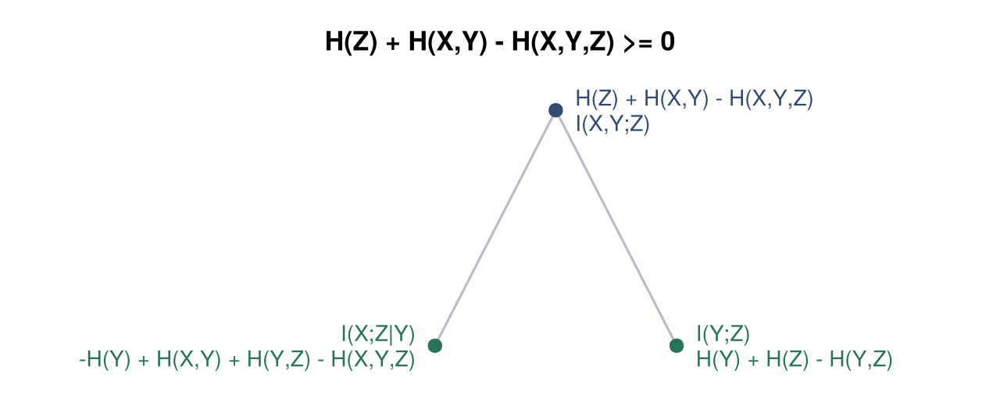
The chain rule
plot_chain_rule draws the expansion
\[H(X_1, \ldots, X_n) = H(X_1) + H(X_2 \mid X_1) + \cdots + H(X_n \mid X_1, \ldots, X_{n-1})\]
as the tree it is, each remainder conditioning on one more variable:
plot_chain_rule(["X", "Y", "Z", "W"])
Everything can be conditioned on a fixed set from the start:
plot_chain_rule(["A", "B", "C"], ["S"])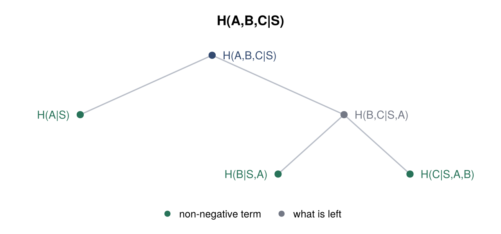
The constraints of a problem
plot_constraints draws the variables and the structural constraints tying them together: a Markov chain as a path, mutual independence as dashed links, and a functional dependence as an arrow from each argument to the variable it determines.
plot_constraints("I(W;Z) <= I(X;Y)", "W/X/Y/Z")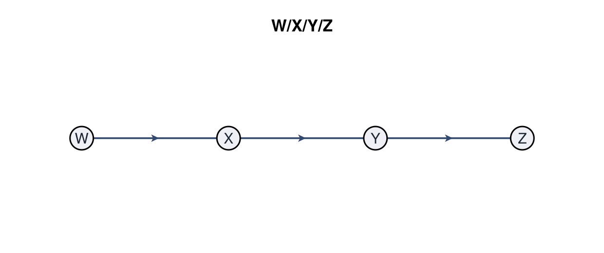
plot_constraints("H(S) <= H(X,Y)", "S:X,Y", "X.Y", "Y/S/Z")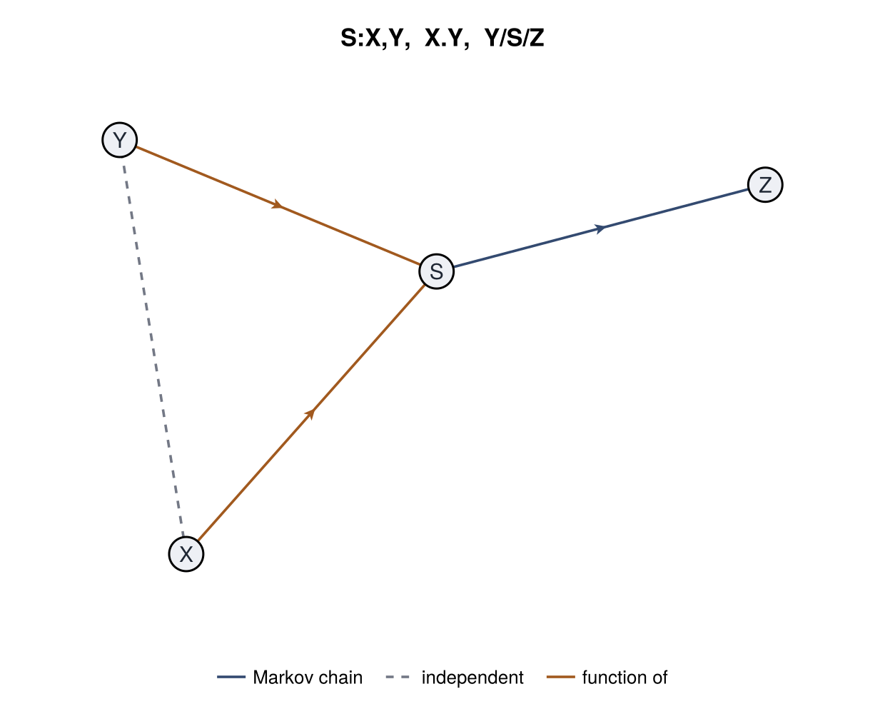
Constraints written as general relations (I(X;Y|Z) = 0 and the like) have no natural edge, so they are left out; constraint_graph returns exactly what is drawn.
A counterexample
When a statement cannot be proven, the certificate is a set of entropy values that satisfies every elemental inequality and constraint but not the statement. plot_counterexample draws what the statement's own quantities come to at those values, which is where the verdict comes from, and the entropies behind them:
plot_counterexample(explain("I(X;Y|Z) <= I(X;Y)"))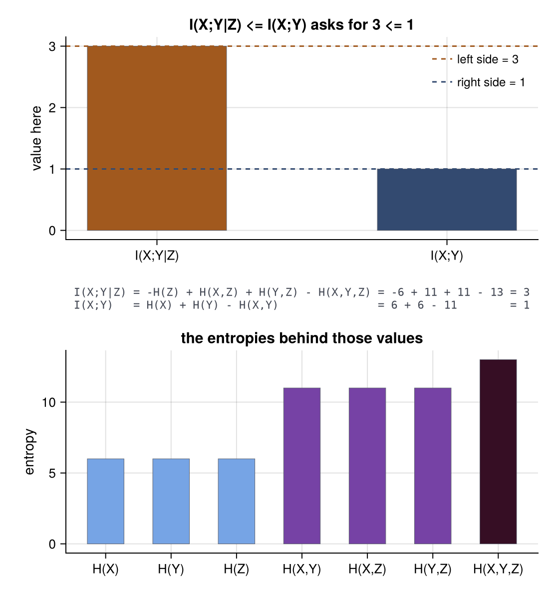
The top panel is the statement, term by term: each bar is one quantity as written, coloured by which side of the relation it sits on, and the dashed lines are what the two sides add up to. The statement asks for the left line to sit below the right one, and it does not.
Between the panels, each quantity is written out in entropies with the counterexample's numbers put in, so the bars above and the bars below are joined by arithmetic the reader can check:
I(A;B|C) = -H(C) + H(A,C) + H(B,C) - H(A,B,C) = -13 + 21 + 21 - 28 = 1The structure of the entropies is often the point too. For the Ingleton expression the singletons all agree, the pairs agree except for one, and the triples agree again — the shape of the polymatroid that defeats it:
plot_counterexample(explain("I(A;B) <= I(A;B|C) + I(A;B|D) + I(C;D)"))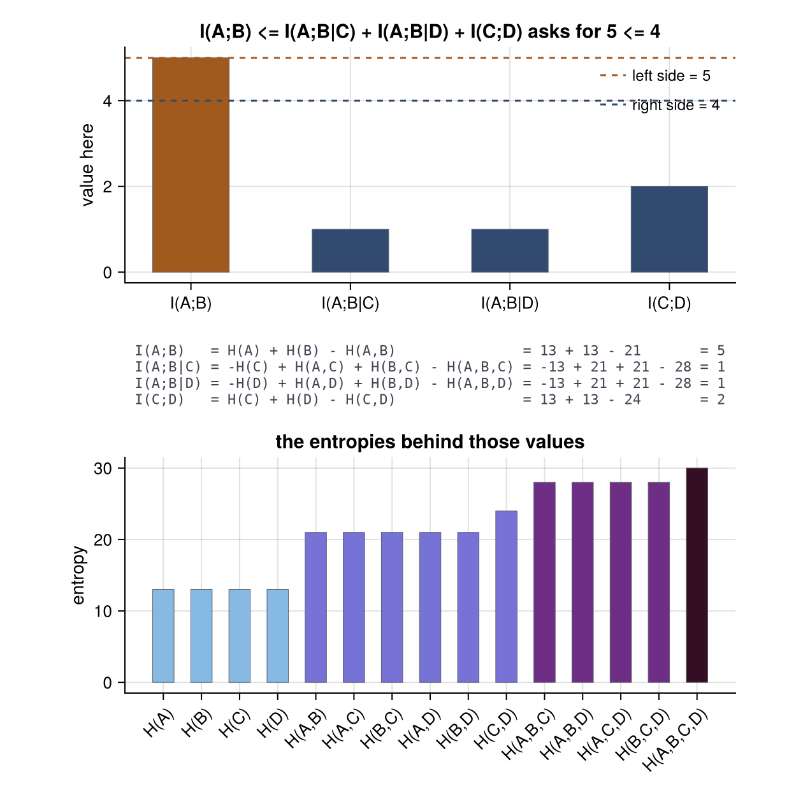
entropy_table returns the same numbers as exact rationals:
entropy_table(explain("I(X;Y|Z) <= I(X;Y)"))7-element Vector{Pair{String, Rational{BigInt}}}:
"H(X)" => 6
"H(Y)" => 6
"H(Z)" => 6
"H(X,Y)" => 11
"H(X,Z)" => 11
"H(Y,Z)" => 11
"H(X,Y,Z)" => 13More of the same
A proof that leans on several constraints, over eight variables and ten levels deep:
statement = "I(B;D,X,Z) <= I(W;A,B,C,D)"
constraints = ["I(W;A,B,C,D) = I(Y;B,C,X)", "I(D;A,B,C,Y) = I(B;D,X,Z)",
"I(D;A,B,C) = 0", "I(Y;A,D,W|B,C,X) = 0"]
plot_proof_tree(explain([statement; constraints]))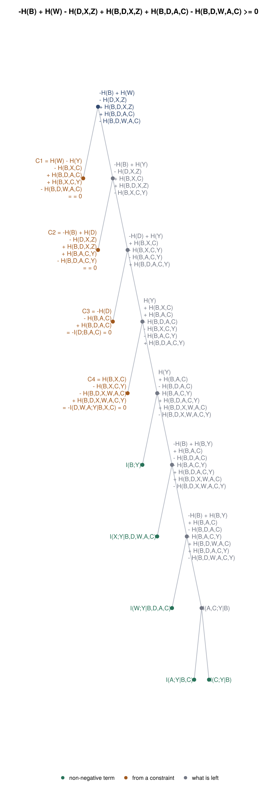
Han's inequality for three variables, whose proof is a chain of three terms:
plot_proof_tree(explain("2 H(X,Y,Z) <= H(X,Y) + H(Y,Z) + H(X,Z)"))
The geometry behind all of this
An entropy vector of $n$ random variables is a point of $\mathbb{R}^{2^n-1}$, one coordinate per non-empty subset. The elemental inequalities cut a cone out of that space, and every vector that comes from an actual distribution lies inside it. Proving a statement is asking whether a half space contains that cone; a counterexample is a point of the cone outside the half space.
The cone for two variables
For two variables the space is three-dimensional — $H(X)$, $H(Y)$, $H(X,Y)$ — so the cone can be drawn exactly:
plot_entropy_cone(; outside=(0.8, 0.5, 0.6))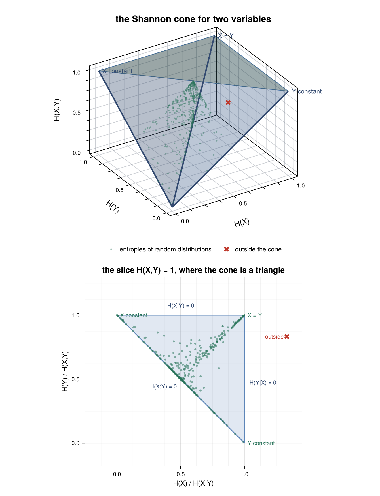
Why it is a cone. The three elemental inequalities
\[H(X \mid Y) \ge 0, \qquad H(Y \mid X) \ge 0, \qquad I(X;Y) \ge 0\]
are all homogeneous — no constant term — so if a point satisfies them, so does every positive multiple of it. The region is therefore closed under scaling: it is an infinite cone with its apex at the origin, where all three entropies vanish. The upper panel truncates it at $H(X,Y) = 1$ purely so there is something finite to draw.
Its three facets are the three inequalities, one each, drawn as the three flat faces. A point on a facet is a distribution making that inequality tight: on $H(X \mid Y) = 0$, $X$ is a function of $Y$; on $I(X;Y) = 0$, the two are independent.
Its three extreme rays are where two facets meet, and each is a recognisable distribution — $X$ constant, $Y$ constant, and $X = Y$. Every point of the cone is a non-negative combination of those three, which is cone_rays. That is the geometric form of the same fact the prover uses: a Shannon-type inequality is one that holds at all three rays.
The slice is the clean view. The lower panel is the cone cut at $H(X,Y) = 1$, i.e. every point divided by its joint entropy. Scaling is the one direction that carries no information, so throwing it away loses nothing and turns the cone into a plain triangle with the three rays as its corners and the three facets as its edges. If the three-dimensional picture is hard to read, read the triangle instead — it is the same object with a degree of freedom removed. azimuth and elevation rotate the upper panel if a different angle suits, and slice=false drops the lower one.
The red cross is (0.8, 0.5, 0.6), which is not an entropy vector of anything: it claims $H(X,Y) = 0.6$ while $H(X) = 0.8$, so $H(X \mid Y) < 0$. In the triangle it lands outside the right edge, which is the facet it breaks.
Where random distributions land
The green points are entropy vectors of distributions drawn at random, and they are worth a second look, because which distributions you draw decides what you see:
using Random: MersenneTwister
names = ["X", "Y"]
fractions(style) = begin
cloud = entropic_samples(2; count=2000, alphabet=3, style=style,
rng=MersenneTwister(1))
(dependent = count(j -> evaluate("I(X;Y)", names, cloud[:, j]) > 0.5,
axes(cloud, 2)) / 2000,
lopsided = count(j -> cloud[1, j] < 0.5, axes(cloud, 2)) / 2000)
end
(structured = fractions(:structured), random = fractions(:random))(structured = (dependent = 0.1725, lopsided = 0.3435), random = (dependent = 0.043, lopsided = 0.133))Drawing the joint distribution outright — style=:random — gives something close to independent almost every time, so the samples pile up against the $I(X;Y) = 0$ edge and leave most of the triangle empty. This is a fact about the sampler, not about the cone: the rest of the triangle is perfectly reachable, it is just that a distribution picked with no structure rarely has much mutual information.
So entropic_samples defaults to style=:structured, which gives each variable a parent among the earlier ones and a noise level, sweeping from "one is a function of the other" to "independent" and reaching across the cone. Pass style=:random to see the pile-up for yourself.
Does the sampling cover everything?
No — and it is worth being precise about why, because two different things are going on.
A finite sample never covers a continuum, so the question is really whether the samples spread over the cone or bunch in part of it. Cut the triangle into a 40×40 grid and count how many of its 820 cells hold at least one sample:
| samples | cells reached |
|---|---|
| 400 | 16 % |
| 4 000 | 43 % |
| 40 000 | 67 % |
| 200 000 | 77 % |
More samples do fill it in, but slowly: five hundred times as many samples buys 16 % → 77 %. The sampler's measure is very uneven, so the thin regions fill at the rate of their probability, not at the rate of the sample count.
The second thing is a real question about the cone rather than the sampler: is every point of the triangle the entropy vector of some distribution? For two variables the answer is yes, and there is a construction. Take independent U, V, W and set
\[X = (U, V), \qquad Y = (U, W),\]
which gives $I(X;Y) = H(U)$, $H(X \mid Y) = H(V)$ and $H(Y \mid X) = H(W)$. The three elemental inequalities say precisely that those three entropies are non-negative, so any point of the cone can be built this way — pick U, V, W with the required entropies and you are done. entropic_distribution does it:
h = [0.8, 0.5, 1.0] # a point of the cone
p, alphabet = entropic_distribution(h)
entropy_vector(p, 2, alphabet) # exactly the point asked for3-element Vector{Float64}:
0.7999999999999998
0.49999999999999983
0.9999999999999999So the Shannon cone for two variables is exactly the set of entropy vectors — nothing drawn inside it is unreachable. (This is special to two and three variables. From four on, the entropic vectors are a strict subset of the cone, which is what the note below is about.)
That construction also gives a sampler that covers the cone evenly, by working backwards: pick the point first, then build a distribution for it. It reaches 99.5 % of the grid cells at 4 000 samples and all of them at 40 000:
plot_entropy_cone(; style=:uniform, samples=1200, slice=true)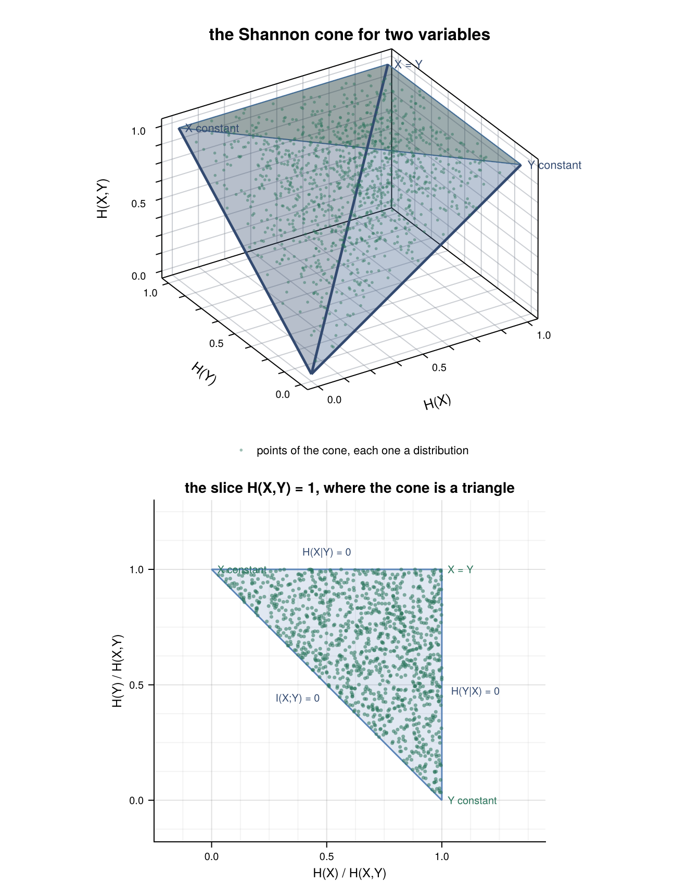
This is the picture of the cone itself. The default :structured picture is a picture of where distributions land when you draw them, which is a different and also useful thing to see — the bunching along the $I(X;Y) = 0$ edge is telling you that independence is what you get by accident.
Three variables: the I-measure
Three variables is where the geometry stops being obvious — the space has seven dimensions — but it is also where the most useful picture in information theory lives. Split the joint entropy into the regions of a Venn diagram: imeasure gives the value of every region, and plot_imeasure draws it.
p = [1, 0, 0, 1, 0, 1, 1, 0] ./ 4 # X, Y fair bits and Z = X xor Y
plot_imeasure(entropy_vector(p, 3, 2); title = "Z = X xor Y")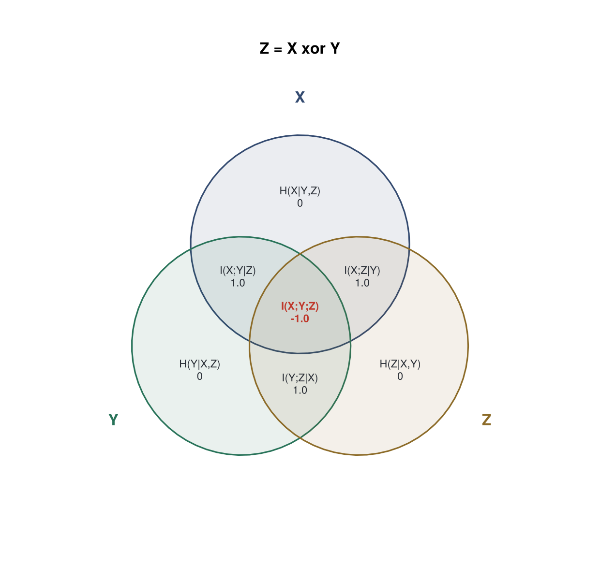
Six of the seven regions are elemental inequalities, so they cannot be negative. The centre is not: I(X;Y;Z) is the only region no inequality protects, and in the exclusive-or distribution it is -1. Each pair of variables is independent, yet any two of them determine the third, and the diagram shows where that goes: each pairwise region is a full bit, and the centre cancels them back down.
Three variables: the cone is a bipyramid
Write the nine elemental inequalities in those seven regions and something convenient happens:
H(X|Y,Z) >= 0 H(Y|X,Z) >= 0 H(Z|X,Y) >= 0
I(X;Y|Z) >= 0 I(X;Z|Y) >= 0 I(Y;Z|X) >= 0
I(X;Y) >= 0 I(X;Z) >= 0 I(Y;Z) >= 0The three private regions in the first row appear in one inequality each and nowhere else. They are a free non-negative orthant: they carry no shape, and can be dropped. What is left involves only the three conditional mutual informations and the centre, and the last row says I(X;Y|Z) + I(X;Y;Z) >= 0 and its two siblings. Normalising by the total gives a three-dimensional body, and that body is a triangular bipyramid, drawn exactly:
plot_entropy_cone(3)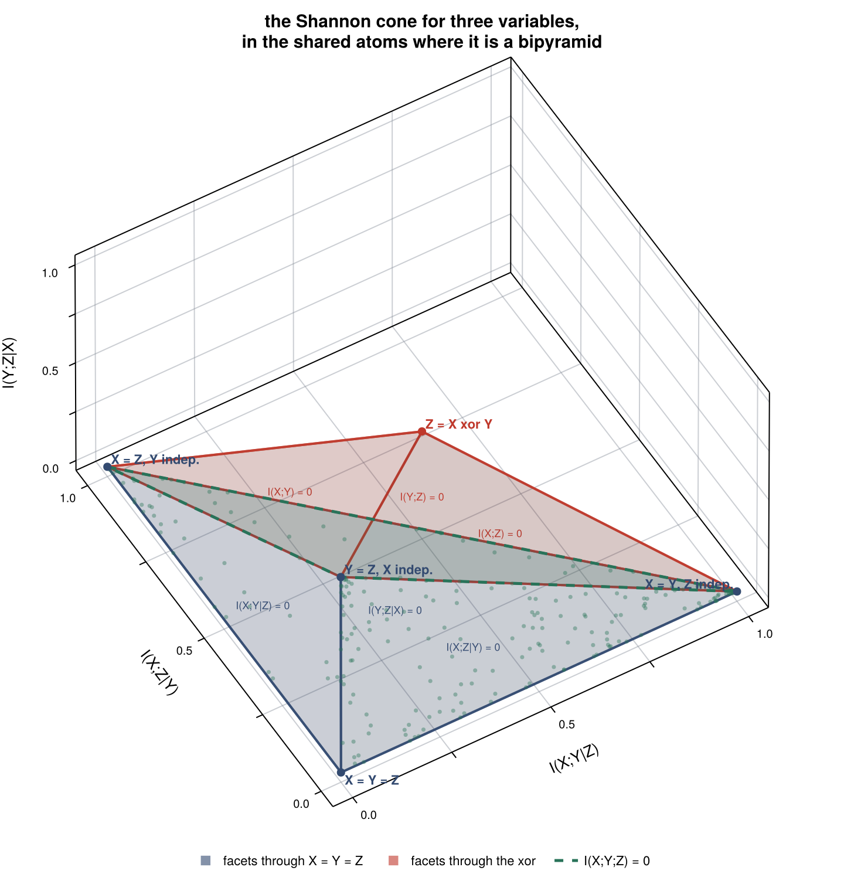
It has five vertices and each is a distribution you can write down (shared_cone_vertices):
shared_cone_vertices()5-element Vector{Pair{Vector{Float64}, String}}:
[0.0, 0.0, 0.0] => "X = Y = Z"
[1.0, 0.0, 0.0] => "X = Y, Z independent"
[0.0, 1.0, 0.0] => "X = Z, Y independent"
[0.0, 0.0, 1.0] => "Y = Z, X independent"
[0.5, 0.5, 0.5] => "Z = X xor Y"Reading it:
- The equator, the green triangle, is exactly
I(X;Y;Z) = 0. Above it three-way information is positive, below it negative. - The upper apex is
X = Y = Z: all the shared information is common to all three at once, so every conditional mutual information is zero. - The equatorial vertices are "two variables agree, the third is independent" — all the shared information sits in one pair.
- The lower apex is exclusive-or, and it is the furthest point below the equator.
I(X;Y;Z)cannot be more negative than this, relative to the shared information, because the cone stops there. Noise does not move it: aZthat equalsX xor Yonly most of the time sits on that same apex, since the three conditional informations stay equal and the normalisation divides the scale out.
So "three-way mutual information can be negative" is not a curiosity — it is one of the two pyramids, half the shape. That is why I(X;Y;Z) >= 0 is not provable:
prove("I(X;Y;Z) >= 0")falseThe green dots are sampled distributions. Almost all of them are in the upper half: negative three-way information needs exclusive-or-like structure, which a randomly drawn distribution essentially never has — about 4 in 1700 in the sample above.
Three variables: where the inequality boundaries are
Every facet of that body is an inequality boundary, and the figure labels them. Six of the nine elemental inequalities survive the slice, and each is tight on exactly one triangular facet (shared_cone_facets):
shared_cone_facets()6-element Vector{Pair{Vector{Int64}, String}}:
[1, 3, 4] => "I(X;Y|Z) = 0"
[1, 2, 4] => "I(X;Z|Y) = 0"
[1, 2, 3] => "I(Y;Z|X) = 0"
[3, 4, 5] => "I(X;Y) = 0"
[2, 4, 5] => "I(X;Z) = 0"
[2, 3, 5] => "I(Y;Z) = 0"The three facets meeting at the X = Y = Z apex are the conditional informations I(X;Y|Z), I(X;Z|Y), I(Y;Z|X) = 0. The three meeting at the exclusive-or apex are the plain ones, I(X;Y), I(X;Z), I(Y;Z) = 0. The remaining three elemental inequalities, H(X|Y,Z), H(Y|X,Z), H(Z|X,Y) >= 0, are tight everywhere on this picture — they are exactly the directions that were dropped, so the whole body lies in their boundary.
A statement about three variables is a half space, so its boundary is a plane, and cut draws where that plane meets the body. I(X;Y;Z) >= 0 cuts straight through it:
plot_entropy_cone(3; cut = "I(X;Y;Z) >= 0")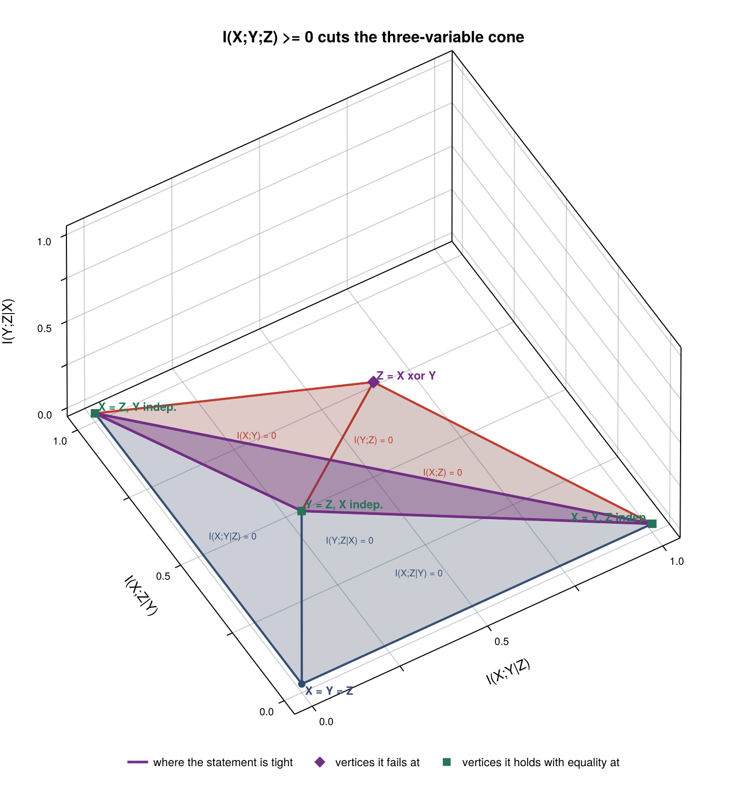
The part below the cut is where the statement fails, and the exclusive-or vertex sits in it — that vertex is the counterexample the prover returns. A statement that is provable does not cut the body at all; it can only touch it:
plot_entropy_cone(3; cut = "H(X,Y,Z) <= H(X,Y) + H(Z)")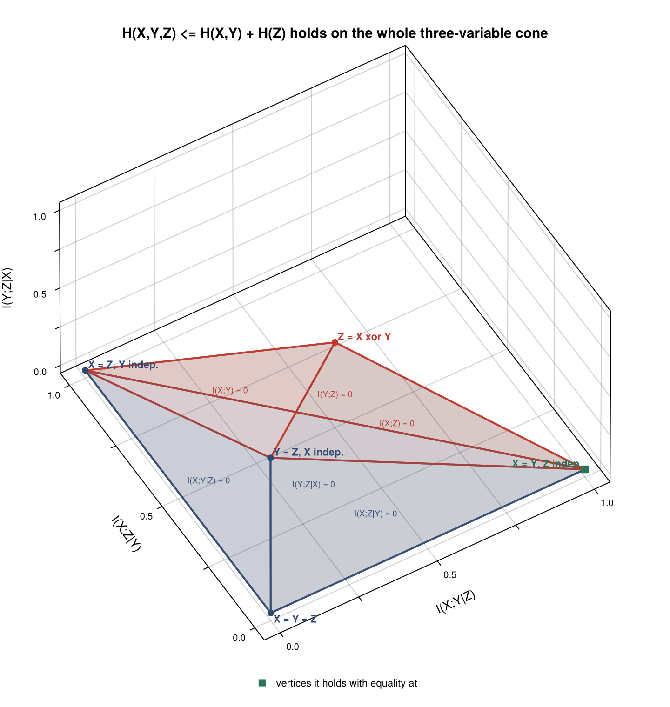
This is the whole story of Shannon-type proving in one picture. The body is the convex hull of five points, so a statement holds on all of it exactly when it holds at those five points — and the package's test suite checks that reading against prove directly. Where a provable statement touches, it touches with equality, and the vertex it touches tells you when the inequality is tight: H(X,Y,Z) <= H(X,Y) + H(Z) becomes an equality exactly when X = Y and Z is independent of them.
shared_coefficients is the conversion behind this, and it also reports the coefficients of the three dropped atoms. If one of those is negative the statement already fails by raising that private entropy alone, and the picture cannot show it; the figure says so rather than misleading you.
More than three variables
Past three variables the space is too big to draw — fifteen dimensions for four — so plot_entropy_space samples entropy vectors and draws them in two. Give it two expressions to use as the axes, so that the picture means something:
plot_entropy_space(3; coordinates = ("I(X;Y)", "I(X;Y|Z)"),
color = "I(X;Y;Z)")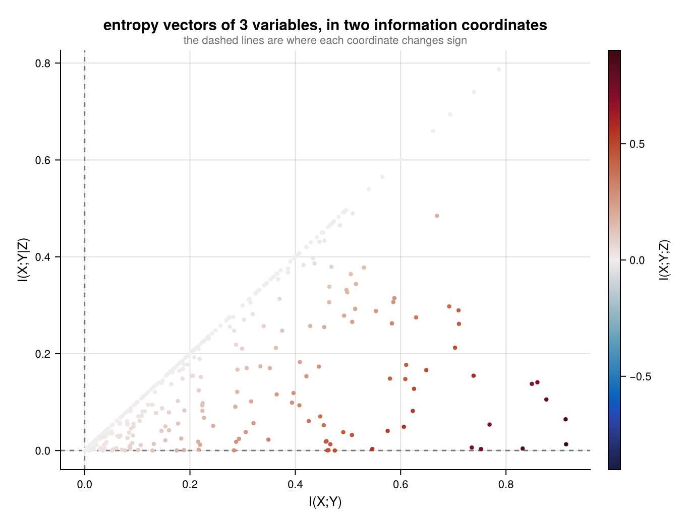
Here the axes are quantities, the dashed lines are where each turns negative, and the diagonal I(X;Y) = I(X;Y|Z) is where the colour is zero — points below it have positive three-way information, points above it negative. The cloud sitting almost entirely below that diagonal is the same fact as before.
Without coordinates the axes are the two principal directions of the sample:
plot_entropy_space(3; color = "I(X;Y;Z)")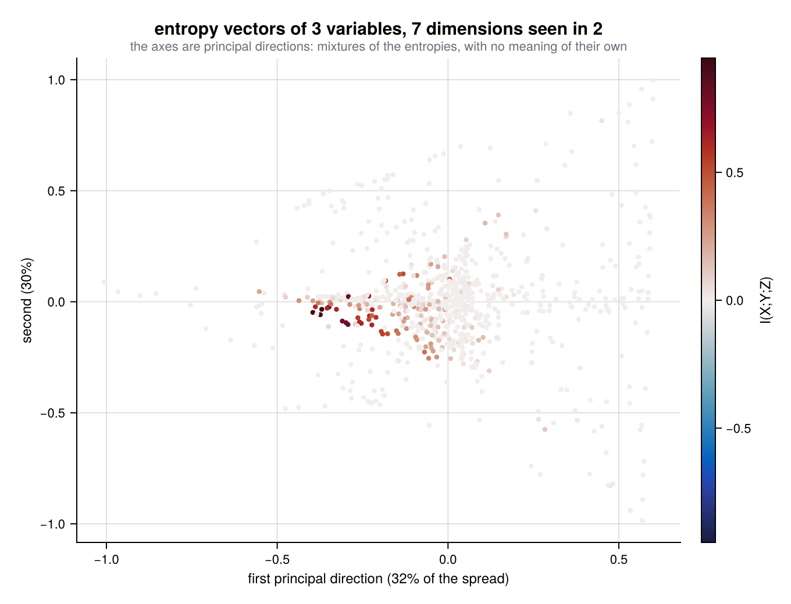
This one needs a warning. The axes are mixtures of all seven entropies and mean nothing on their own; distance in the picture is not distance in any quantity; there is no boundary drawn, because the boundary of the cone is not a curve in this projection; and the clumps are an artefact of the sampler, one per choice of which variable follows which, not a feature of the cone. The two directions here carry only about 79% of the spread, so even the shape is partly an accident of projection. The colour is the one thing that does mean something: it is the value of the expression, red for positive and blue for negative. Prefer the two pictures above it.
Saving a figure
The figures are ordinary Makie figures, so they are saved the usual way, in whatever format CairoMakie supports:
fig = plot_proof_tree(explain("H(X,Y,Z) <= H(X,Y) + H(Z)"))
save("proof.pdf", fig) # or .png, .svgThe figure is sized from the labels it has to fit, so it is readable without being asked. size = (width, height), title, fontsize and wrap (how many characters before a long expression is broken over lines) are there for when the default does not suit the expression at hand.